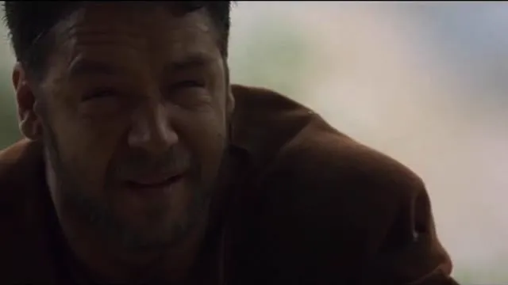

Original music for film, ads and video
Stock music sounds like everyone else’s video. An original track is written for your cut: it follows the edit, builds where the picture builds and leaves room for the voice. I compose piano-led and electronic music for films, ads and content, mixed and delivered ready to use.
Music I have composed for picture
- Changan, commercial: music and sound design
- Gladiator, rescore: composition, original music written for a scene of the film
- Founder of the label ORISON RCRDS, and a pianist for ten years
Changan · Commercial · music and sound design

Gladiator — Rescore · Composition · film scene © its studio
Original music options
- Loop or jingle up to 30 s · typical turnaround: 5 working days
- Track up to 1 min · typical turnaround: 7 working days
- Track up to 3 min · typical turnaround: 10 working days
- Score for a short film (minimum 3 minutes) · typical turnaround: 14 working days
The licence is non-exclusive by default. Exclusivity is available on request and quoted separately. The exact rights and usage covered are written in your quote.
How a music project works
- Send your picture and a short brief. A video export, a render or a build, plus a few lines on what you want (references welcome).
- Get a fixed quote in writing. Price, deadline and deliverables are agreed before any work starts.
- First version, then revisions. Two rounds of revisions are included unless stated otherwise.
- Final files, ready to use. WAV 24-bit / 48 kHz and an MP4 with sound, loudness-checked for where it will play.
FAQ
Can you do the music and the sound design together?
Yes, and it is often the best result: music and effects are written to fit each other. See sound design.
Do you record live orchestras?
Not at the moment: the music is built around piano, synths and production.
Send the video, a few musical references and your deadline.